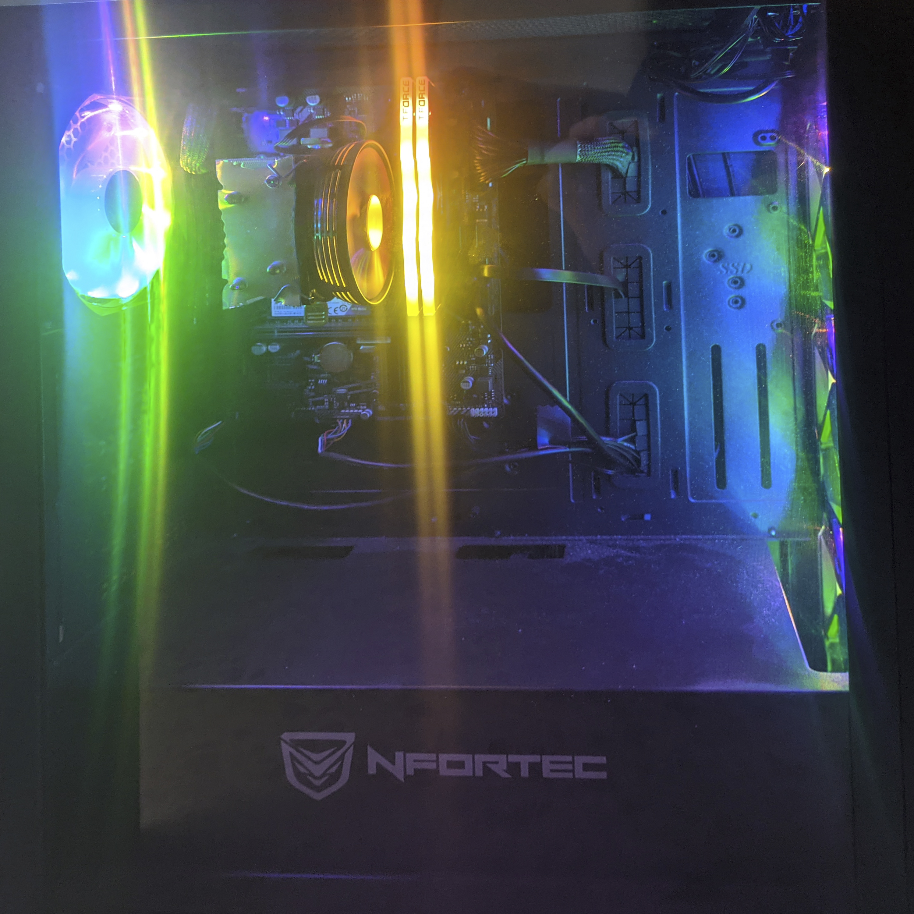
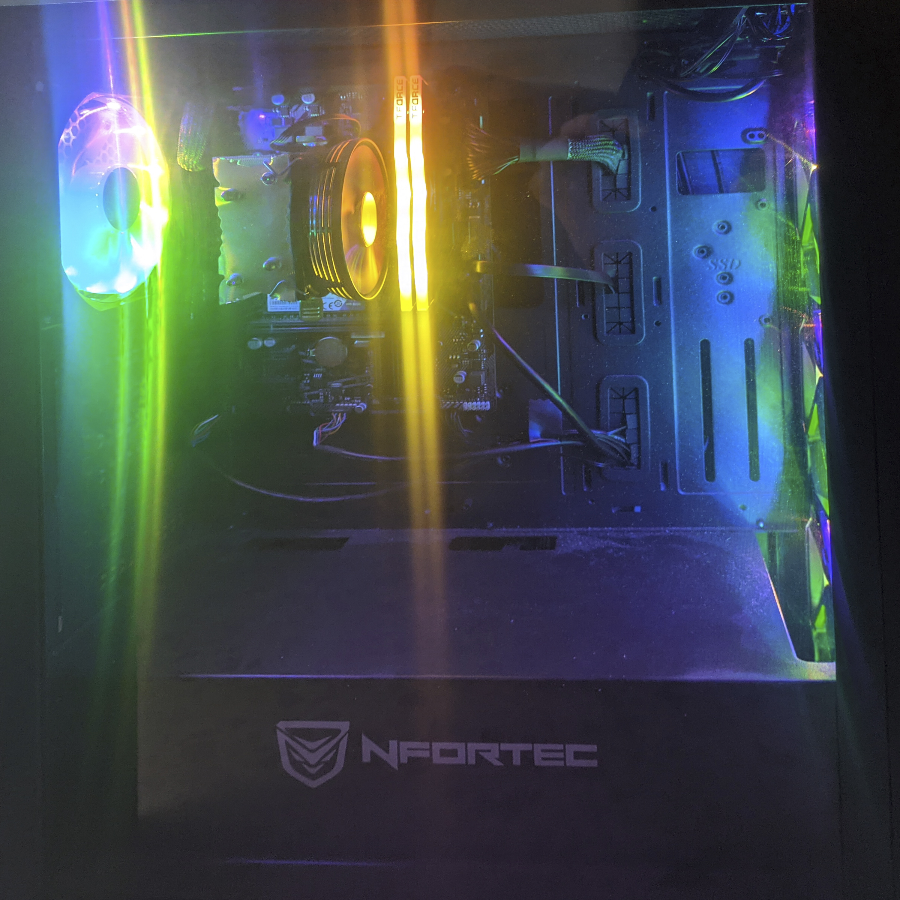

Experto en montaje de ordenadores
Desde muy temprana edad siempre he sido muy curioso, y gracias a eso empecé a sentir mucha curiosidad sobre ¿como funciona un ordenador?, ¿que habrá dentro de un portátil?. Son preguntas que siempre me he hecho lo cual me llevo a intentar abrir un portatil. Vi que era algo raro en el cual habia una placa verde, un ventilador, eran cosas que yo desconocía en aquel momento y con el tiempo fuí aprendiendo sobre ello hasta darme cuenta que era cada cosa y fue ahí, una vez que aprendí, cuando hice mi primera modificación, le cambie el stick de memoria ram de 2gb por uno de 4gb. Desde ese entonces me he dedicado a aprender más para poder dedicarme a lo que verdaderamente me gustaba y ahora me he podido montar mi primer PC:
 

- Case: NFortec Krater Negro
- Motherboard: Gigabyte H410M S2H
- CPU: Intel i5-10600K
- GPU: UHD Graphics 630
- RAM: 2x8GB TeamGroup Delta 3200
- Storage: 512GB M.2 WD Blue
- Storage/2: 512GB SSD Crucial
- CPU Cooler: Mars Gaming MCPU117
- PSU: Corsair CV650
- Buzzer: Personalized